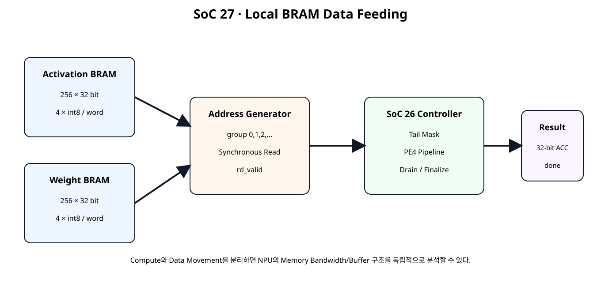
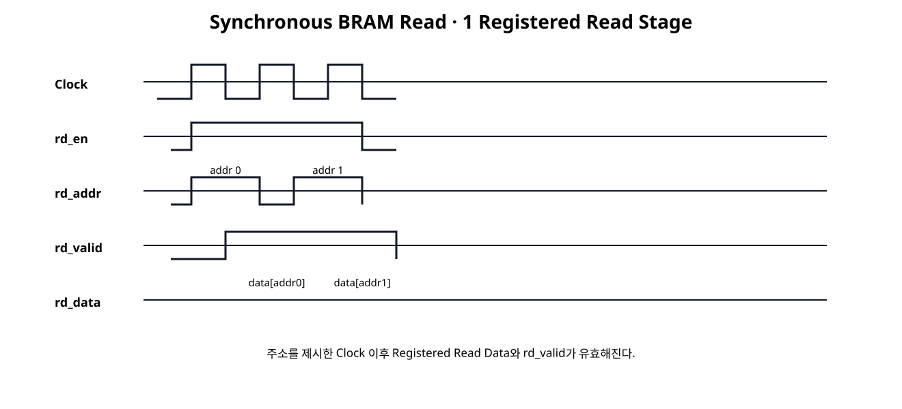
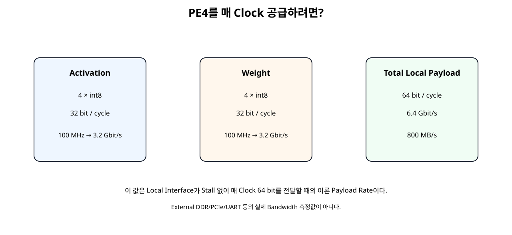

전체 학습 위치
이번 장의 목표

원본 보기 ↗
왜 Local Memory가 필요한가
PE를 여러 개 병렬화해도 매 Clock 필요한 Weight와 Activation을 공급하지 못하면 DSP는 대기한다. 따라서 NPU 성능은 계산량뿐 아니라 Data를 얼마나 빠르게 Local Datapath로 공급할 수 있는지가 중요하다.
전체 Architecture
Activation / Weight Buffer
Activation과 Weight를 별도 32-bit Memory로 분리했다. 두 Memory를 같은 Address로 병렬 Read하면 한 Group에 필요한 A 4개와 B 4개를 동시에 가져올 수 있다.
Simple-Dual-Port 구조
| Port | 역할 |
|---|---|
| Write Port | Host/Loader가 Local Buffer를 채움 |
| Read Port | Compute Address Generator가 Group을 읽음 |
Write와 Read를 분리하면 이후 Double Buffering과 Compute/Load Overlap으로 확장하기 쉽다.
Block RAM은 Synchronous Read

원본 보기 ↗
RAM Inference 원칙
RAMB18E1/RAMB36E1 Primitive를 직접 Instantiate하지 않고 RTL Array를 사용해 Vivado가 Memory Primitive를 추론하도록 했다. AMD 2026.1은 일반적인 Memory 구조에 대해 HDL Inference를 우선 권장한다.
RAM_STYLE=block
(* ram_style = "block" *)
reg [31:0] mem [0:255];이 Attribute는 Block RAM Mapping을 요청한다. 하지만 실제 RAMB Primitive 개수와 Mapping은 합성 후 report_ram_utilization로 확인한다.
Read Data Valid
Memory Interface에 rd_valid_o를 별도로 둔다. Address Request와 Data Response를 구분하면 BRAM Latency가 Datapath에 명확히 드러난다.
32-bit Word와 4-Lane Packing
word[7:0] → lane0
word[15:8] → lane1
word[23:16] → lane2
word[31:24] → lane3SoC 25/26의 PE4 Input Format을 그대로 사용하므로 Memory에서 읽은 Word를 별도 재배열 없이 Controller에 공급할 수 있다.
Address Generator
Address Generator는 Vector Group 번호를 Memory Address로 사용한다.
Group 1 → addr 1
Group 2 → addr 2
...
Group Address
requested_groups_o의 하위 Address Bit를 Read Address로 사용한다. Length 10이면 Group 0,1,2의 세 Word를 읽는다.
FEED 구간 연속 Read
SoC 26 Controller는 FEED 상태에서 vec_ready_o를 유지한다. 따라서 첫 BRAM Read Latency 이후 Address Generator는 매 Clock 다음 Address를 요청할 수 있다.
BRAM Read Latency 흡수
Address Generator는 Request Count와 Delivered Count를 분리한다. requested_groups_o는 BRAM에 Address를 넣은 횟수이고 delivered_groups_o는 Read Data가 Controller에 실제 전달된 횟수다.
Requested / Delivered Count
BRAM rd_valid + Controller READY → delivered_groups
이 구분은 이후 External Memory, DMA, FIFO처럼 Request와 Response Latency가 더 길어질 때 그대로 확장할 수 있다.
SoC26 Controller 재사용
vector_dot_controller_pe4.v는 SoC 26 파일을 BYTE-IDENTICAL로 재사용한다. 이번 장은 Compute Controller를 고치지 않고 Source를 External Stream에서 BRAM Feeder로 바꾸는 단계다.
Tail Mask 재사용
Memory의 마지막 Word에는 Vector Length 밖의 Garbage Data가 들어 있어도 SoC 26 Controller가 Tail Lane을 0으로 Mask한다. 따라서 Local Buffer는 항상 완전한 32-bit Word 단위로 저장할 수 있다.
Local Buffer Capacity
Range Error
Length가 1024를 넘으면 Address가 8-bit 범위를 초과해 Wrap할 수 있으므로 Compute Start를 거부하고 range_error_o를 발생시킨다.
length ≥ 1025 → range_error
Bandwidth 계산

원본 보기 ↗
800 MB/s의 의미
이는 Local Interface가 Stall 없이 매 Clock 64 bit를 전달할 때의 Payload Rate이다. DDR, PCIe, UART 같은 외부 Memory/Link의 실제 측정 Bandwidth가 아니다.
BRAM RTL
module vector_bram_sdp #(
parameter integer ADDR_WIDTH = 8,
parameter integer DATA_WIDTH = 32
) (
input wire clk,
input wire resetn,
input wire wr_en_i,
input wire [ADDR_WIDTH-1:0] wr_addr_i,
input wire [DATA_WIDTH-1:0] wr_data_i,
input wire rd_en_i,
input wire [ADDR_WIDTH-1:0] rd_addr_i,
output reg [DATA_WIDTH-1:0] rd_data_o,
output reg rd_valid_o
);
// Simple-dual-port local vector buffer.
//
// Write port: synchronous.
// Read port : synchronous, one registered read-data stage.
//
// Do not reset the RAM array itself. This coding style is intentionally
// kept close to Vivado RAM inference templates.
//
// RAM_STYLE requests block RAM mapping. Actual mapping must still be
// verified with report_ram_utilization after synthesis.
(* ram_style = "block" *)
reg [DATA_WIDTH-1:0] mem [
0:(1 << ADDR_WIDTH)-1
];
always @(posedge clk) begin
if (wr_en_i) begin
mem[wr_addr_i] <= wr_data_i;
end
end
always @(posedge clk) begin
if (rd_en_i) begin
rd_data_o <= mem[rd_addr_i];
end
end
always @(posedge clk) begin
if (!resetn) begin
rd_valid_o <= 1'b0;
end else begin
rd_valid_o <= rd_en_i;
end
end
endmodule
Feeder RTL
module bram_vector_feeder #(
parameter integer ADDR_WIDTH = 8
) (
input wire clk,
input wire resetn,
input wire start_i,
input wire [15:0] vector_length_i,
input wire downstream_ready_i,
output wire act_rd_en_o,
output wire [ADDR_WIDTH-1:0] act_rd_addr_o,
input wire [31:0] act_rd_data_i,
input wire act_rd_valid_i,
output wire weight_rd_en_o,
output wire [ADDR_WIDTH-1:0] weight_rd_addr_o,
input wire [31:0] weight_rd_data_i,
input wire weight_rd_valid_i,
output wire vec_valid_o,
output wire [31:0] a_vec_o,
output wire [31:0] b_vec_o,
output reg [15:0] requested_groups_o,
output reg [15:0] delivered_groups_o,
output wire active_o
);
// This feeder is paired with vector_dot_controller_pe4.
// The downstream controller keeps READY high throughout FEED, so the
// synchronous BRAM can issue one group every clock after startup.
//
// Request side:
// rd_en_o + rd_addr_o
//
// Response side one clock later:
// *_rd_valid_i + *_rd_data_i
//
// The feeder does not hard-code BRAM data values or PE pipeline latency.
wire [16:0] length_plus3_w;
wire [15:0] total_groups_w;
assign length_plus3_w =
{1'b0, vector_length_i} + 17'd3;
assign total_groups_w =
length_plus3_w[16:2];
reg [15:0] total_groups_q;
reg active_q;
assign active_o = active_q;
wire can_issue_w;
assign can_issue_w =
active_q &&
downstream_ready_i &&
(requested_groups_o < total_groups_q);
assign act_rd_en_o = can_issue_w;
assign weight_rd_en_o = can_issue_w;
assign act_rd_addr_o =
requested_groups_o[ADDR_WIDTH-1:0];
assign weight_rd_addr_o =
requested_groups_o[ADDR_WIDTH-1:0];
assign vec_valid_o =
act_rd_valid_i &&
weight_rd_valid_i;
assign a_vec_o = act_rd_data_i;
assign b_vec_o = weight_rd_data_i;
always @(posedge clk) begin
if (!resetn) begin
total_groups_q <= 16'd0;
requested_groups_o <= 16'd0;
delivered_groups_o <= 16'd0;
active_q <= 1'b0;
end else begin
if (start_i) begin
total_groups_q <= total_groups_w;
requested_groups_o <= 16'd0;
delivered_groups_o <= 16'd0;
active_q <=
(vector_length_i != 16'd0);
end else begin
if (can_issue_w) begin
requested_groups_o <=
requested_groups_o + 16'd1;
end
if (
vec_valid_o &&
downstream_ready_i
) begin
delivered_groups_o <=
delivered_groups_o + 16'd1;
if (
delivered_groups_o ==
(total_groups_q - 16'd1)
) begin
active_q <= 1'b0;
end
end
end
end
end
endmodule
Accelerator RTL
module local_bram_dot_accelerator #(
parameter integer ADDR_WIDTH = 8
) (
input wire clk,
input wire resetn,
// Buffer load ports.
input wire act_wr_en_i,
input wire [ADDR_WIDTH-1:0] act_wr_addr_i,
input wire [31:0] act_wr_data_i,
input wire weight_wr_en_i,
input wire [ADDR_WIDTH-1:0] weight_wr_addr_i,
input wire [31:0] weight_wr_data_i,
// Compute command.
input wire start_i,
input wire [15:0] vector_length_i,
// Status/result.
output wire busy_o,
output wire done_o,
output wire result_valid_o,
output wire signed [31:0] result_o,
// Debug/teaching status.
output wire [15:0] requested_groups_o,
output wire [15:0] delivered_groups_o,
output wire [15:0] accepted_groups_o,
output wire [15:0] completed_groups_o,
output wire range_error_o
);
// Architecture:
//
// Activation BRAM ---\
// > BRAM feeder -> SoC26 controller/PE4 -> result
// Weight BRAM ------/
//
// Each 32-bit BRAM word contains four signed 8-bit scalar values.
//
// With ADDR_WIDTH=8:
// depth = 256 words
// scalar lanes = 256 * 4 = 1024 elements
//
// Commands larger than the local-buffer capacity are rejected.
localparam [16:0] MAX_ELEMENTS_W =
(17'd4 << ADDR_WIDTH);
wire range_error_w;
wire start_valid_w;
assign range_error_w =
({1'b0, vector_length_i} > MAX_ELEMENTS_W);
assign range_error_o =
start_i && range_error_w;
assign start_valid_w =
start_i && !range_error_w;
wire act_rd_en;
wire [ADDR_WIDTH-1:0] act_rd_addr;
wire [31:0] act_rd_data;
wire act_rd_valid;
wire weight_rd_en;
wire [ADDR_WIDTH-1:0] weight_rd_addr;
wire [31:0] weight_rd_data;
wire weight_rd_valid;
wire vec_valid;
wire vec_ready;
wire [31:0] a_vec;
wire [31:0] b_vec;
vector_bram_sdp #(
.ADDR_WIDTH(ADDR_WIDTH),
.DATA_WIDTH(32)
) u_activation_bram (
.clk(clk),
.resetn(resetn),
.wr_en_i(act_wr_en_i),
.wr_addr_i(act_wr_addr_i),
.wr_data_i(act_wr_data_i),
.rd_en_i(act_rd_en),
.rd_addr_i(act_rd_addr),
.rd_data_o(act_rd_data),
.rd_valid_o(act_rd_valid)
);
vector_bram_sdp #(
.ADDR_WIDTH(ADDR_WIDTH),
.DATA_WIDTH(32)
) u_weight_bram (
.clk(clk),
.resetn(resetn),
.wr_en_i(weight_wr_en_i),
.wr_addr_i(weight_wr_addr_i),
.wr_data_i(weight_wr_data_i),
.rd_en_i(weight_rd_en),
.rd_addr_i(weight_rd_addr),
.rd_data_o(weight_rd_data),
.rd_valid_o(weight_rd_valid)
);
bram_vector_feeder #(
.ADDR_WIDTH(ADDR_WIDTH)
) u_bram_vector_feeder (
.clk(clk),
.resetn(resetn),
.start_i(start_valid_w),
.vector_length_i(vector_length_i),
.downstream_ready_i(vec_ready),
.act_rd_en_o(act_rd_en),
.act_rd_addr_o(act_rd_addr),
.act_rd_data_i(act_rd_data),
.act_rd_valid_i(act_rd_valid),
.weight_rd_en_o(weight_rd_en),
.weight_rd_addr_o(weight_rd_addr),
.weight_rd_data_i(weight_rd_data),
.weight_rd_valid_i(weight_rd_valid),
.vec_valid_o(vec_valid),
.a_vec_o(a_vec),
.b_vec_o(b_vec),
.requested_groups_o(requested_groups_o),
.delivered_groups_o(delivered_groups_o),
.active_o()
);
vector_dot_controller_pe4 u_vector_controller (
.clk(clk),
.resetn(resetn),
.start_i(start_valid_w),
.vector_length_i(vector_length_i),
.vec_valid_i(vec_valid),
.vec_ready_o(vec_ready),
.a_vec_i(a_vec),
.b_vec_i(b_vec),
.busy_o(busy_o),
.done_o(done_o),
.result_valid_o(result_valid_o),
.result_o(result_o),
.accepted_groups_o(accepted_groups_o),
.completed_groups_o(completed_groups_o)
);
endmodule
Board Demo
Board Demo Loader가 세 Word를 Activation/Weight Buffer에 먼저 Write한 뒤 Length 10 Compute를 시작한다.
마지막 Word의 unused Lane에는 non-zero Garbage를 저장해 Tail Mask가 빠질 경우 결과가 달라지게 구성했다.
Self-Checking Testbench
`timescale 1ns / 1ps
module tb_local_bram_dot_accelerator;
logic clk = 1'b0;
logic resetn = 1'b0;
logic act_wr_en_i = 1'b0;
logic [7:0] act_wr_addr_i = 8'd0;
logic [31:0] act_wr_data_i = 32'h0;
logic weight_wr_en_i = 1'b0;
logic [7:0] weight_wr_addr_i = 8'd0;
logic [31:0] weight_wr_data_i = 32'h0;
logic start_i = 1'b0;
logic [15:0] vector_length_i = 16'd0;
wire busy_o;
wire done_o;
wire result_valid_o;
wire signed [31:0] result_o;
wire [15:0] requested_groups_o;
wire [15:0] delivered_groups_o;
wire [15:0] accepted_groups_o;
wire [15:0] completed_groups_o;
wire range_error_o;
int error_count = 0;
int check_count = 0;
always #5 clk = ~clk;
local_bram_dot_accelerator #(
.ADDR_WIDTH(8)
) dut (
.clk(clk),
.resetn(resetn),
.act_wr_en_i(act_wr_en_i),
.act_wr_addr_i(act_wr_addr_i),
.act_wr_data_i(act_wr_data_i),
.weight_wr_en_i(weight_wr_en_i),
.weight_wr_addr_i(weight_wr_addr_i),
.weight_wr_data_i(weight_wr_data_i),
.start_i(start_i),
.vector_length_i(vector_length_i),
.busy_o(busy_o),
.done_o(done_o),
.result_valid_o(result_valid_o),
.result_o(result_o),
.requested_groups_o(requested_groups_o),
.delivered_groups_o(delivered_groups_o),
.accepted_groups_o(accepted_groups_o),
.completed_groups_o(completed_groups_o),
.range_error_o(range_error_o)
);
function automatic integer ceil_div4(
input integer n
);
ceil_div4 = (n + 3) / 4;
endfunction
function automatic integer signed gen_a(
input integer scalar_index
);
integer temp;
begin
temp = ((scalar_index * 29) + 17) & 8'hFF;
if (temp >= 128)
temp = temp - 256;
gen_a = temp;
end
endfunction
function automatic integer signed gen_b(
input integer scalar_index
);
integer temp;
begin
temp = ((scalar_index * 47) + 91) & 8'hFF;
if (temp >= 128)
temp = temp - 256;
gen_b = temp;
end
endfunction
function automatic [31:0] pack4(
input integer x0,
input integer x1,
input integer x2,
input integer x3
);
begin
pack4 = {
x3[7:0],
x2[7:0],
x1[7:0],
x0[7:0]
};
end
endfunction
task automatic check_true(
input string name,
input bit condition
);
begin
check_count++;
if (!condition) begin
error_count++;
$error("CHECK FAIL: %s", name);
end else begin
$display("CHECK PASS: %s", name);
end
end
endtask
task automatic check_eq32(
input string name,
input logic signed [31:0] actual,
input logic signed [31:0] expected
);
begin
check_count++;
if (actual !== expected) begin
error_count++;
$error(
"CHECK FAIL: %s actual=%0d expected=%0d",
name,
actual,
expected
);
end else begin
$display(
"CHECK PASS: %s = %0d",
name,
actual
);
end
end
endtask
task automatic write_group(
input integer group_index,
input integer length,
inout integer signed expected_acc
);
integer lane;
integer scalar_index;
integer signed a0;
integer signed a1;
integer signed a2;
integer signed a3;
integer signed b0;
integer signed b1;
integer signed b2;
integer signed b3;
integer signed lane_a;
integer signed lane_b;
begin
// Intentional garbage in all lanes first.
a0 = 127;
a1 = 127;
a2 = 127;
a3 = 127;
b0 = -128;
b1 = -128;
b2 = -128;
b3 = -128;
for (lane = 0; lane < 4; lane++) begin
scalar_index = (group_index * 4) + lane;
if (scalar_index < length) begin
lane_a = gen_a(scalar_index);
lane_b = gen_b(scalar_index);
expected_acc =
expected_acc +
(lane_a * lane_b);
case (lane)
0: begin a0 = lane_a; b0 = lane_b; end
1: begin a1 = lane_a; b1 = lane_b; end
2: begin a2 = lane_a; b2 = lane_b; end
3: begin a3 = lane_a; b3 = lane_b; end
endcase
end
end
@(negedge clk);
act_wr_addr_i = group_index[7:0];
act_wr_data_i = pack4(a0, a1, a2, a3);
act_wr_en_i = 1'b1;
weight_wr_addr_i = group_index[7:0];
weight_wr_data_i = pack4(b0, b1, b2, b3);
weight_wr_en_i = 1'b1;
@(posedge clk);
#1;
@(negedge clk);
act_wr_en_i = 1'b0;
weight_wr_en_i = 1'b0;
end
endtask
task automatic pulse_start(
input integer length
);
begin
@(negedge clk);
vector_length_i = length[15:0];
start_i = 1'b1;
@(negedge clk);
start_i = 1'b0;
end
endtask
task automatic run_case(
input integer length
);
integer groups;
integer group_index;
integer timeout;
integer signed expected_acc;
begin
groups = ceil_div4(length);
expected_acc = 0;
$display("");
$display(
"RUN length=%0d groups=%0d",
length,
groups
);
for (
group_index = 0;
group_index < groups;
group_index++
) begin
write_group(
group_index,
length,
expected_acc
);
end
pulse_start(length);
timeout = 0;
while (
(result_valid_o !== 1'b1) &&
(timeout < 2000)
) begin
@(posedge clk);
#1;
timeout++;
end
check_true(
"result_valid arrived",
result_valid_o === 1'b1
);
check_true(
"done with result",
done_o === 1'b1
);
check_eq32(
"local BRAM vector result",
result_o,
expected_acc
);
check_true(
"requested group count",
requested_groups_o == groups
);
check_true(
"delivered group count",
delivered_groups_o == groups
);
check_true(
"accepted group count",
accepted_groups_o == groups
);
check_true(
"completed group count",
completed_groups_o == groups
);
check_true(
"busy low at completion",
busy_o === 1'b0
);
@(posedge clk);
#1;
end
endtask
task automatic run_range_error_case;
begin
$display("");
$display("RUN out-of-range length=1025");
@(negedge clk);
vector_length_i = 16'd1025;
start_i = 1'b1;
#1;
check_true(
"range error asserted",
range_error_o === 1'b1
);
@(posedge clk);
#1;
@(negedge clk);
start_i = 1'b0;
repeat (4) @(posedge clk);
#1;
check_true(
"invalid command did not start busy",
busy_o === 1'b0
);
check_true(
"invalid command did not produce result",
result_valid_o === 1'b0
);
end
endtask
initial begin
repeat (5) @(posedge clk);
resetn = 1'b1;
run_case(0);
run_case(1);
run_case(2);
run_case(3);
run_case(4);
run_case(5);
run_case(10);
run_case(16);
run_case(17);
run_case(31);
run_case(64);
run_range_error_case();
$display("");
$display("SOC27 CHECK COUNT : %0d", check_count);
$display("SOC27 ERROR COUNT : %0d", error_count);
if (error_count == 0) begin
$display("SOC27 LOCAL BRAM FEEDING TEST: PASS");
end else begin
$fatal(
1,
"SOC27 LOCAL BRAM FEEDING TEST: FAIL (%0d errors)",
error_count
);
end
#20;
$finish;
end
endmodule
Length 0/1/2/3/4/5/10/16/17/31/64를 Local Buffer에 실제 Write하고 BRAM Read 경로를 거쳐 최종 결과를 확인한다.
Python Reference
length,groups,result_raw
0,0,0
1,1,1547
2,1,-3881
3,1,-9206
4,1,-11702
5,2,-14531
10,3,-25045
16,4,-19384
17,5,-21709
31,8,-19552
64,16,-35552
buffer depth = 256 x 32 bit per BRAM array
maximum scalar elements = 1024
length 1025 -> range error
demo length 10 -> expected raw result 55 -> LED 0x0037
100 MHz local read payload = 6.400 Gbit/s = 800.0 MB/s
Bandwidth number is an interface payload rate, not measured external-memory performance.
SOC27 PYTHON LOCAL BRAM REFERENCE: PASS
Spreadsheet runtime warmup failed during python startup
Traceback (most recent call last):
File "/tmp/tmp.L2TH2Y5coc/artifact_tool_v2-2.8.22/artifact_tool/patches/warm_spreadsheet_runtime_on_startup.py", line 26, in warm_spreadsheet_runtime_on_startup
File "/tmp/tmp.L2TH2Y5coc/artifact_tool_v2-2.8.22/artifact_tool/spreadsheet_warmup.py", line 785, in warm_spreadsheet_runtime
File "/tmp/tmp.L2TH2Y5coc/artifact_tool_v2-2.8.22/artifact_tool/spreadsheet_warmup.py", line 720, in _warm_feature_flows
File "/tmp/tmp.L2TH2Y5coc/artifact_tool_v2-2.8.22/artifact_tool/spreadsheet_warmup.py", line 704, in _warm_collaboration_flows
File "/tmp/tmp.L2TH2Y5coc/artifact_tool_v2-2.8.22/artifact_tool/generated/interface/models.py", line 32317, in hydrate_crdt_from_proto
File "/tmp/tmp.L2TH2Y5coc/artifact_tool_v2-2.8.22/artifact_tool/rpc/remote.py", line 749, in __call__
File "/tmp/tmp.L2TH2Y5coc/artifact_tool_v2-2.8.22/artifact_tool/rpc/client.py", line 150, in call
artifact_tool.rpc.client.RemoteError: hydrateCrdtFromProto requires an empty collaborative document.
OOC Memory Inference
고정 Length 10 Board Demo만 합성하면 Optimizer가 사용하지 않는 Memory 영역을 줄일 가능성이 있다. 그래서 Generic local_bram_dot_accelerator를 Out-of-Context로 별도 합성해 Memory 구조를 검증한다.
# SoC 27 · Generic local-buffer memory inference check
#
# This flow synthesizes the generic accelerator out-of-context so the
# local memories are not reduced to the fixed three-word board demo.
set script_dir [file dirname [file normalize [info script]]]
set root_dir [file normalize [file join $script_dir ".."]]
set rtl_dir [file join $root_dir "rtl"]
set out_dir [file normalize [file join $root_dir "reports" "memory_inference"]]
file mkdir $out_dir
create_project -in_memory -part xc7a35tcpg236-1
read_verilog [file join $rtl_dir "mul_s8_dsp.v"]
read_verilog [file join $rtl_dir "pe4_dot_accum_pipelined.v"]
read_verilog [file join $rtl_dir "vector_dot_controller_pe4.v"]
read_verilog [file join $rtl_dir "vector_bram_sdp.v"]
read_verilog [file join $rtl_dir "bram_vector_feeder.v"]
read_verilog [file join $rtl_dir "local_bram_dot_accelerator.v"]
synth_design \
-mode out_of_context \
-top local_bram_dot_accelerator \
-part xc7a35tcpg236-1
report_utilization \
-hierarchical \
-file [file join $out_dir "01_utilization_ooc.rpt"]
report_ram_utilization \
-include_lutram \
-file [file join $out_dir "02_ram_utilization_ooc.rpt"] \
-csv [file join $out_dir "02_ram_utilization_ooc.csv"]
redirect -file [file join $out_dir "03_ramb_cells_ooc.rpt"] {
set ramb_cells [get_cells -hier -filter {REF_NAME =~ RAMB*}]
puts "RAMB primitive count: [llength $ramb_cells]"
foreach cell $ramb_cells {
puts "[get_property REF_NAME $cell] $cell"
}
}
redirect -file [file join $out_dir "04_dsp_cells_ooc.rpt"] {
set dsp_cells [get_cells -hier -filter {REF_NAME =~ DSP48*}]
puts "DSP48 primitive count: [llength $dsp_cells]"
foreach cell $dsp_cells {
puts "[get_property REF_NAME $cell] $cell"
}
}
report_timing_summary \
-delay_type min_max \
-report_unconstrained \
-max_paths 10 \
-file [file join $out_dir "05_timing_summary_ooc.rpt"]
puts ""
puts "SoC 27 OOC memory-inference check complete."
puts "Verify BRAM mapping in 02_ram_utilization_ooc.rpt / CSV."
puts "Do not claim RAMB18/RAMB36 counts until this report is generated."
RAM Utilization Report
report_ram_utilization -include_lutram은 RTL Memory Array가 실제 Block RAM/Distributed RAM Primitive에 어떻게 Mapping됐는지 보여준다. CSV도 같이 생성해 향후 자원 비교에 사용할 수 있다.
Board Implementation
# SoC 27 · Basys3 board-demo implementation
set script_dir [file dirname [file normalize [info script]]]
set root_dir [file normalize [file join $script_dir ".."]]
set rtl_dir [file join $root_dir "rtl"]
set xdc_dir [file join $root_dir "constraints"]
set out_dir [file normalize [file join $root_dir "reports" "board_demo"]]
file mkdir $out_dir
create_project -in_memory -part xc7a35tcpg236-1
read_verilog [file join $rtl_dir "reset_active_high_to_active_low.v"]
read_verilog [file join $rtl_dir "mul_s8_dsp.v"]
read_verilog [file join $rtl_dir "pe4_dot_accum_pipelined.v"]
read_verilog [file join $rtl_dir "vector_dot_controller_pe4.v"]
read_verilog [file join $rtl_dir "vector_bram_sdp.v"]
read_verilog [file join $rtl_dir "bram_vector_feeder.v"]
read_verilog [file join $rtl_dir "local_bram_dot_accelerator.v"]
read_verilog [file join $rtl_dir "local_bram_demo_loader_len10.v"]
read_verilog [file join $rtl_dir "local_bram_result_sink.v"]
read_verilog [file join $rtl_dir "local_bram_dot_basys3_top.v"]
synth_design \
-top local_bram_dot_basys3_top \
-part xc7a35tcpg236-1
read_xdc [file join $xdc_dir "basys3_local_bram_lab.xdc"]
create_clock \
-name sys_clk \
-period 10.000 \
[get_ports clk]
report_utilization \
-hierarchical \
-file [file join $out_dir "01_utilization_post_synth.rpt"]
report_ram_utilization \
-include_lutram \
-file [file join $out_dir "02_ram_utilization_post_synth.rpt"]
opt_design
place_design
phys_opt_design
route_design
report_utilization \
-hierarchical \
-file [file join $out_dir "03_utilization_post_route.rpt"]
report_ram_utilization \
-include_lutram \
-file [file join $out_dir "04_ram_utilization_post_route.rpt"]
report_timing_summary \
-delay_type min_max \
-report_unconstrained \
-max_paths 20 \
-file [file join $out_dir "05_timing_summary_post_route.rpt"]
report_design_analysis \
-max_paths 50 \
-setup \
-logic_level_distribution \
-file [file join $out_dir "06_design_analysis_post_route.rpt"]
set_switching_activity \
-default_static_probability 0.5 \
-default_toggle_rate 12.5
report_power \
-file [file join $out_dir "07_power_normalized_activity.rpt"] \
-rpx [file join $out_dir "07_power_normalized_activity.rpx"]
report_methodology \
-file [file join $out_dir "08_methodology_post_route.rpt"]
write_checkpoint -force \
[file join $out_dir "soc27_board_demo_post_route.dcp"]
puts ""
puts "SoC 27 board implementation complete."
puts "Expected demo result: raw 55, LED 0x0037."
Board Flow에서는 Timing, RAM Utilization, 전체 Resource, Power, Methodology를 다시 확인한다.
Post-route Timing / Power
BRAM을 넣으면 Address/Control Fanout, BRAM Clock-to-Output, Data Routing이 새로운 Timing 요소가 된다. AMD는 높은 Clock에서 Memory Output Pipeline Register를 활용해 Timing Closure를 쉽게 하도록 권장한다. 이 Output Pipeline 확장은 SoC 28에서 다룬다.
왜 Generic OOC Report가 필요한가
교육용 Board Demo의 상수 Data/Length는 합성 최적화 대상이 될 수 있다. Memory Architecture 자체를 평가할 때는 Generic Accelerator를 별도 합성해 실제 Inference 결과를 확인하고, Board Demo Report는 전체 시스템 동작용으로 구분한다.
SoC28 연결
SoC 28 → Prefetch FIFO + Backpressure + Double Buffer + Load/Compute Overlap
다음 장에서는 “Memory가 PE보다 느리거나 READY가 중간에 내려가면 어떻게 할 것인가?”를 처리한다.
오류 점검
| 증상 | 원인 | 확인 |
|---|---|---|
| Address와 Data가 한 Cycle 어긋남 | BRAM Synchronous Read 무시 | rd_valid |
| BRAM 대신 LUTRAM 사용 | Coding Style/Depth/Attribute | report_ram_utilization |
| Length 10 결과가 55가 아님 | Tail Mask 또는 Word Packing | 0x0037 예상 |
| Length 1025에서 오래된 Data 사용 | Address Wrap | range_error |
| 첫 Word 누락 | Controller CLEAR 중 Read Response | READY 기반 Request |
| 마지막 Word 누락 | Request/Delivered Count 혼동 | 두 Counter 비교 |
| Board Report에서 RAM이 작아짐 | 고정 Demo 최적화 | Generic OOC Report |
| PE가 자주 Idle | Memory Feeding Stall | SoC28 FIFO/Prefetch |
SoC 27 완료 체크리스트
- [ ] Activation과 Weight Local Buffer를 분리한다.
- [ ] 32-bit Word에 signed int8 4개를 Packing한다.
- [ ] Simple-Dual-Port RAM 구조를 이해한다.
- [ ] Block RAM Read가 Synchronous임을 이해한다.
- [ ] rd_en/rd_addr와 rd_valid/rd_data를 구분한다.
- [ ]
RAM_STYLE=block과 실제 Mapping 확인을 구분한다. - [ ] Address Generator가 Group 번호를 순차 생성한다.
- [ ] Requested와 Delivered Count를 분리한다.
- [ ] SoC 26 Controller를 수정 없이 재사용한다.
- [ ] Local Buffer 256×32가 1024 Scalar를 저장함을 계산한다.
- [ ] Length 1025를 Range Error로 차단한다.
- [ ] 100 MHz에서 Local Payload 64 bit/cycle의 의미를 계산한다.
- [ ] Generic OOC Memory Inference와 Board Implementation을 분리 검증한다.
공식 매뉴얼 및 근거
| 문서 | 확인 항목 |
|---|---|
| AMD UG949 · Inferring RAM and ROM · 2026.1 | 일반적으로 RAM/ROM Inference 권장 |
| AMD UG901 · RAM HDL Coding Techniques · 2026.1 | RTL RAM Coding과 Memory Primitive Mapping |
| AMD UG901 · Distributed vs Block RAM · 2026.1 | Distributed RAM Async Read / Block RAM Sync Read |
| AMD UG901 · Memory Inference Capabilities · 2026.1 | Single/Simple Dual/True Dual Port, Enable, Output Register |
| AMD UG949 · RAM Performance · 2026.1 | Memory Depth 선택과 Output Pipeline 권장 |
| AMD UG906 · Report RAM Utilization · 2026.1 | Memory Primitive/Width/Depth/Pipeline/Enable 분석 |
| AMD UG906 · Running RAM Utilization · 2026.1 | -include_lutram와 CSV Report |